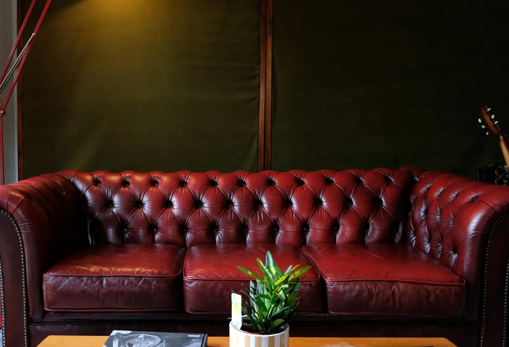
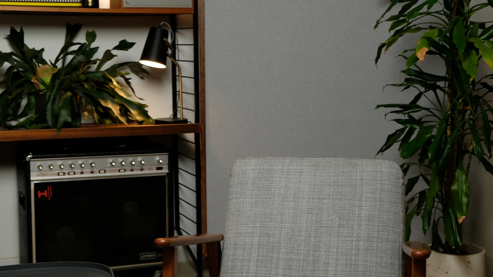
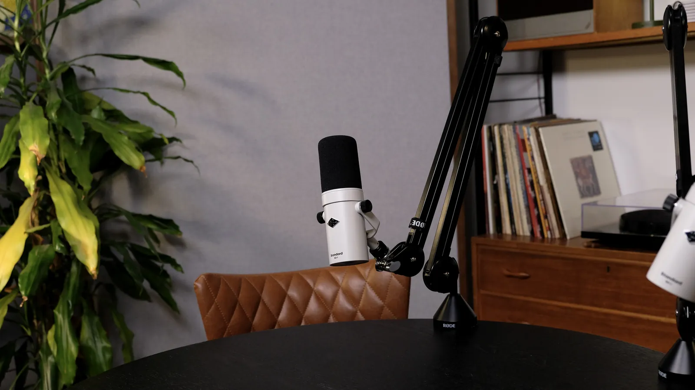
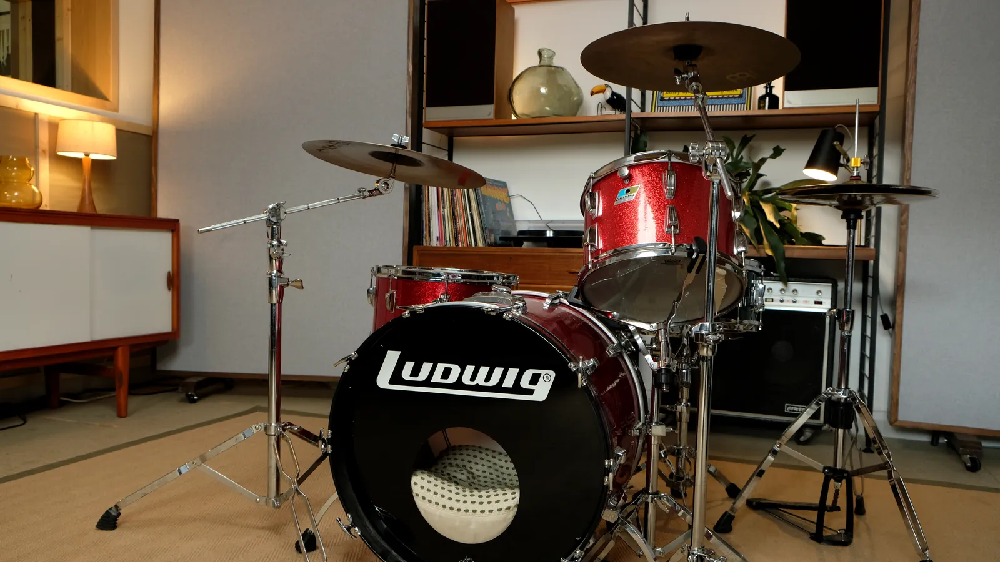

Studio hire · St Albans, Hertfordshire
A characterful space for photo, film and dry hire.
Hire the studio for photo shoots, filming, podcasts, rehearsals or writing sessions. You get natural light, styled sets and countryside calm, all close to London.
Ideal for
One space, many uses

Photography
Headshots, brand portraits, product shoots and press shots, all in soft natural light with warm interior backdrops.

Film & podcast dry hire
Bring your own crew and use our sets, furniture, power and acoustically treated rooms.

Rehearsal & writing
Rehearse, write or run a pre-production day in a relaxed and inspiring setting, with backline available.
Dry hire rates
Straightforward hire
Dry hire gives you exclusive use of the space without an engineer. You can add our engineer, cameras or extra kit if you need them.
FAQ
Hire questions
What's included in dry hire?
Exclusive use of the studio spaces, furniture and sets, practical lighting, power and Wi-Fi. Studio cameras, lighting kits, microphones and an engineer can be added.
Can we move the furniture and dress the set?
Yes. The sets are designed to be flexible. Tell us your plan in advance and we'll have the room ready for you.
How do we get there?
The studio is a short taxi ride from St Albans City, Harpenden and Hemel Hempstead stations, each about 20–30 minutes from central London by train. See Getting here.
Want to see the space first?
Book a viewing or ask for a video walkthrough. We're happy to help.